Hospitals here in Canada are overwhelmed with the number of patients.
The press have continuously addressed the situation in the hospitals, but the situation does not seem to get better.
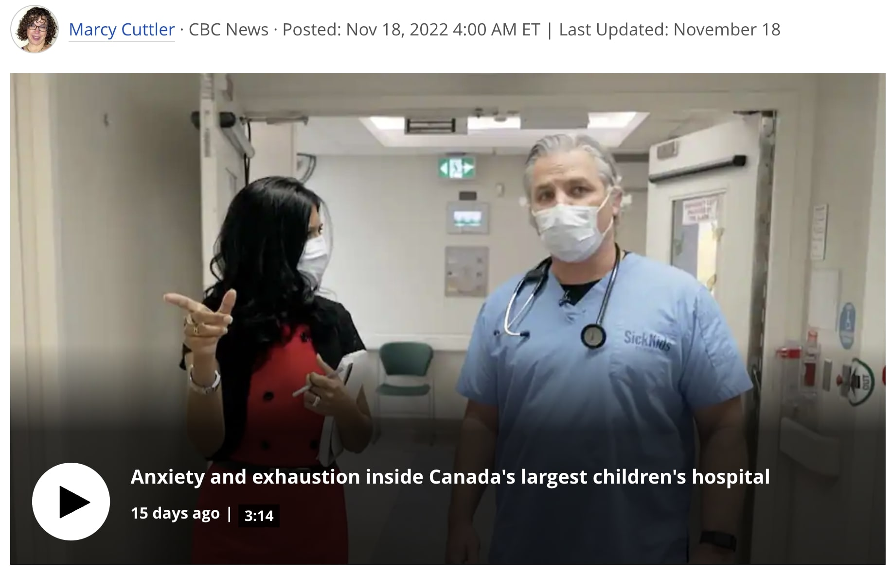
Hospital Situation in Canada
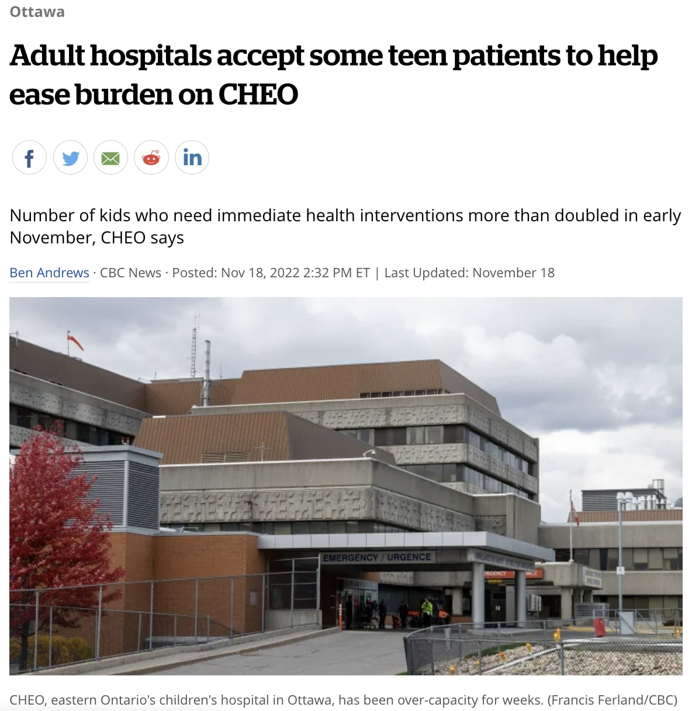
Hospital At Issue here in Canada
...so there is this company that wanted to help the medical staff by using its own technology (a computer software and electronically-charged glasses) connecting the clinicians to the patients virtually when and where the help is needed...
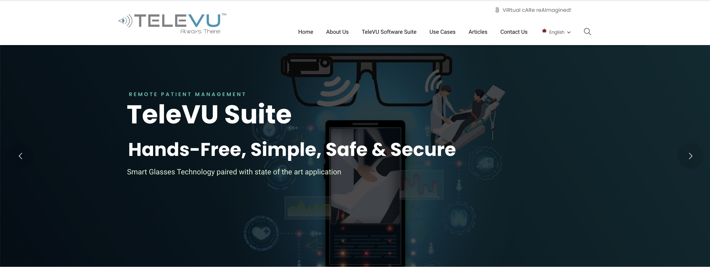
“
TeleVU Suite is used in the following cases!
”
Emergency Response Team
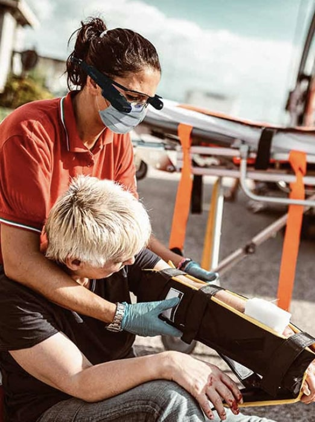
During the emergency situation, ERT staffs can use this to connect to the clinicians to offer immediate medical assistant to the patients at the site before they escort the patients to the designated hospital.
Rehabilitation
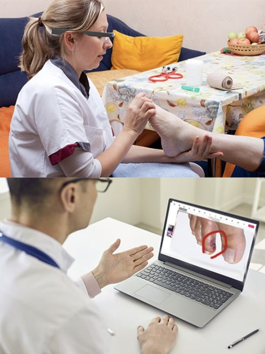
When the professional medical staff is physically absent but is still available to treat a patient remotely, TeleVU communication tool comes useful to connect between the assistant and the practitioner.
Surgeons
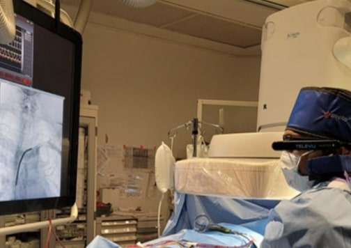
There are times that surgeons in the surgery rooms need to exchange their opinion on how to treat the patient during the session. For many reasons, it is difficult to connect other surgeons during the session. On the other hand, TeleVU technology allows them to stay connected whenever needed.
ABOUT THE PROJECT
Category
UX Design
Duration of Time
2 Months (June 2022 ~ August 2022)
My Role
UX Designer & UX Researcher
Tools Used
Figma, Miro & Google Spreadsheet
Project Brief
TeleVU corporation is an innnovative remote patient care service provider
that provides TeleVU Suite which is composed of iSee web portal (right)
for clinicians to use on Desktop and uSee smartphone mobile application
(left) for the frontline clinicians who make direct contact with the
patients.
The Problem
A group of certified clinicians may not feel that the product's current
interface is easy and convenient to use because the interface lacks
optimization and organization in comparison to other platforms that offer
video-conferencing features.
The Challenges
They hope to speak up for some changes, but they are usually extremely
busy to leave feedback to the executives of TeleVU Innovations due tothe
number of patients waiting for their medical assistance.
The Goal
Redesign the interface of the product to make it intuitive and convenient
for the medical professionals
Tasks Done
My teammates and I had done the following tasks:
User Interview
Competitive Analysis
User Journey Map
Wireframing & Prototyping
OVERVIEW
From how the original version looked like...
Original GlassVU
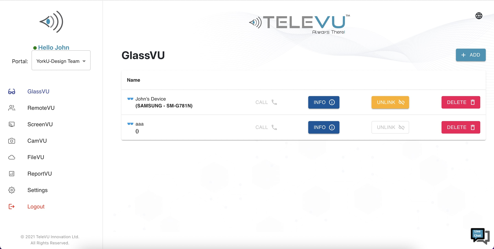
Original ReportVU
Original Video Conference Page
...to how it gets changed.
Redesigned GlassVU
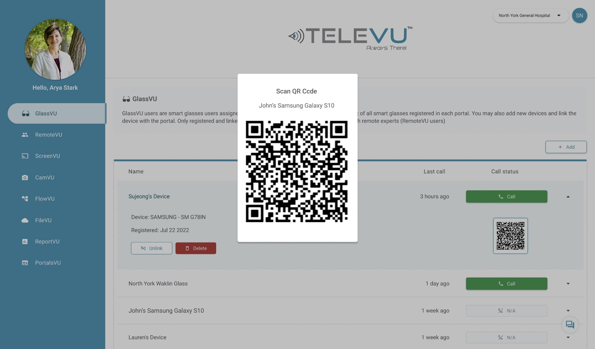
Redesigned ReportVU
Redesigned Video Conference Page
PROJECT JOURNEY
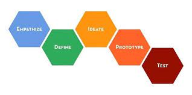
5 Stages of UX Design Process
The Design Process
« Understand »
The project's target audience was the medical professionals regardless of their age, region or country. The user research was conducted by sending out Google forms to the contacts that TeleVU Innovations Inc. had as well as inviting a few medical professionals to live interview via Zoom.
During the interview, we have had an opportunity to ask some questions regarding their engagement in using the smart technology during the treatment sessions.
In this research, we have had about 8 participants whose titles vary from nurse to physician and whose ages ranged between 20s to 50s.
From conducting the research...
Zoom Interview
Competitive Analysis on Google via Miro
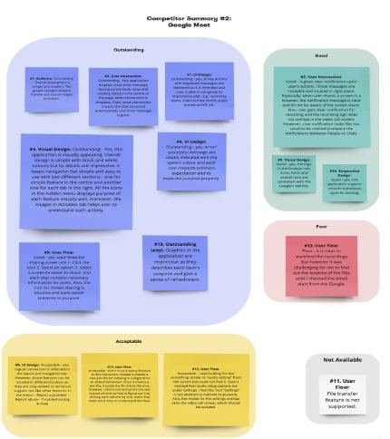
iSee TeleVU Web Application Affinity Mapping
Three major issues were discovered during the use of TeleVU's product:
The login process was complicated.It was difficult to navigate from one menu to another for the clinicians whilst they tried to engage with the productThe layout in the video-conference session was confusing that the clinicians struggled to stay engaged in the calls
After emphasizing with and attempting to understand our users, a few user personas were created with the user flow and user journey map to meet the needs and goals of the users.
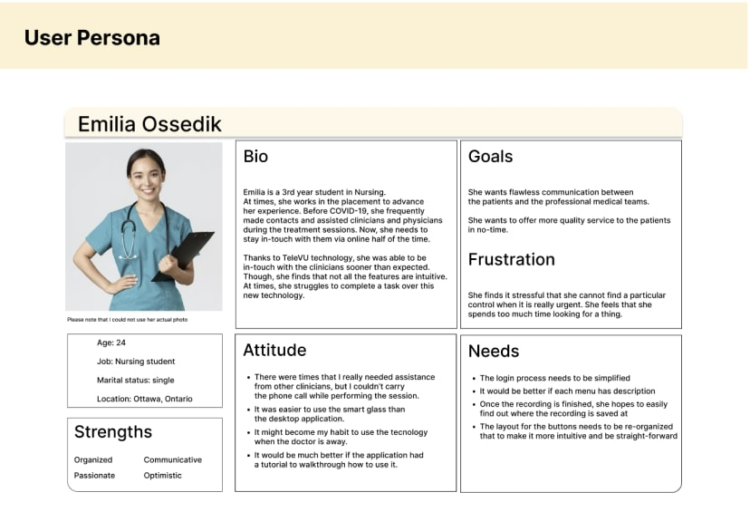
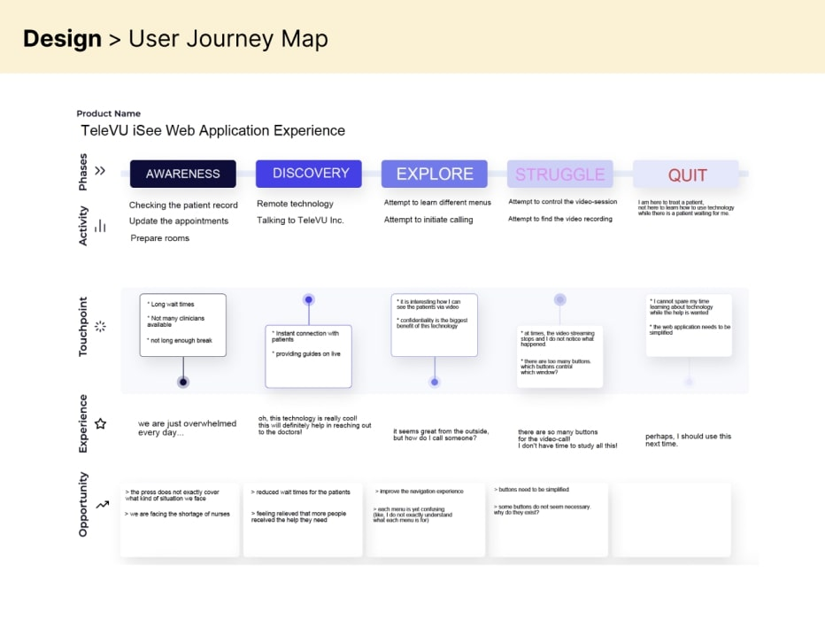
« Design »
Explore Style
The brand tone for TeleVU Incorporation is agile but but clean as well as neat. Therefore, we have been consistent with the blue colour, which was the primary colour for the design, but we've also mixed with grey, red, and green as supplementary colours.
Visualize
Pages for the web app were sketched based on the user flow to get a better sense of how they would look and after the sketches were finalized.
Here are the rough draft of sketches...
Low-fidelity for History Page
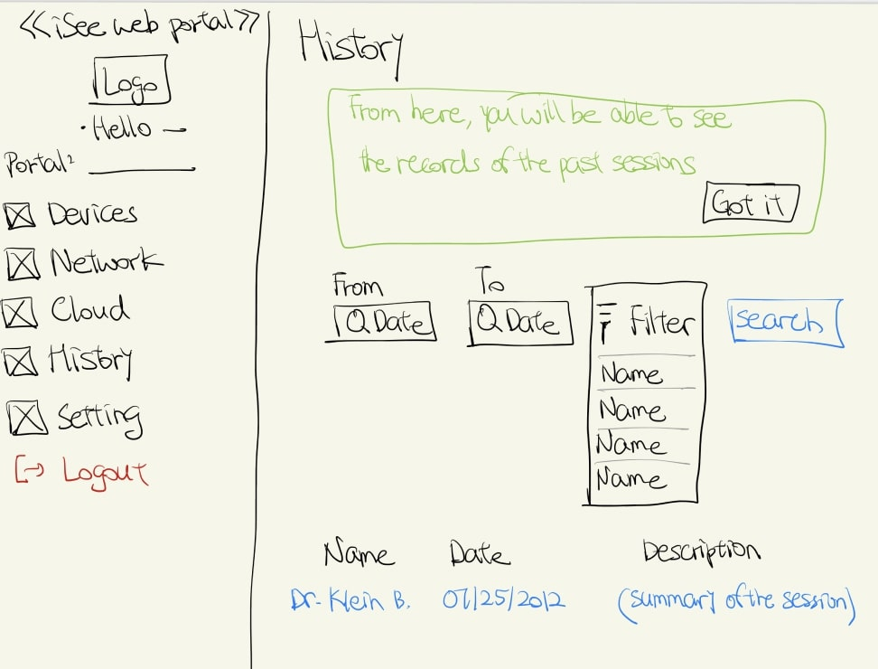
Low-fidelity for Video-Conference Page
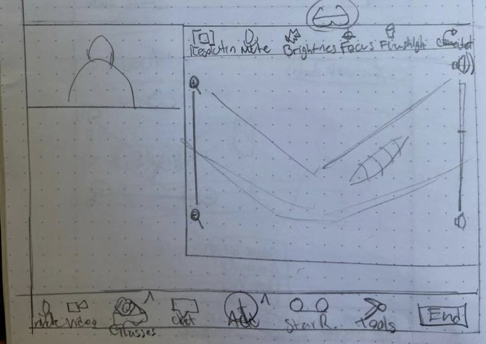
Low-fidelity for GlassVU Page
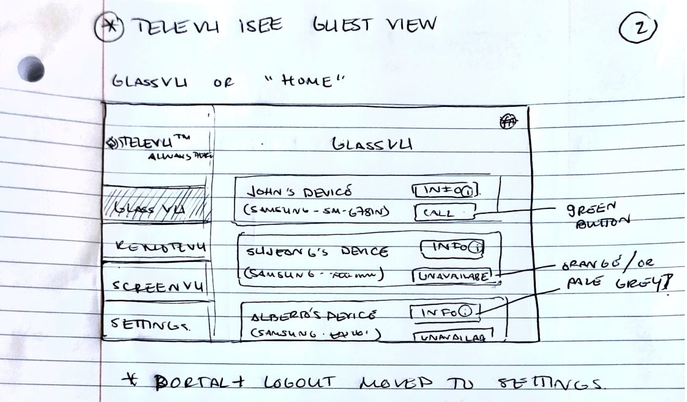
« Keep track of styles »
All visual and UI elements must be properly documented in a style guide, in order to ensure consistency across all breakpoints.
Design Guide for Logos
Design Guide for Buttons
Design Guide for Colours
....to come up with the high-fidelity pages for the product....
Here are the comments from the participants who have offered their time to give us more feedback on the new design.
Feedback for iSee Web Application Settings & Navigation
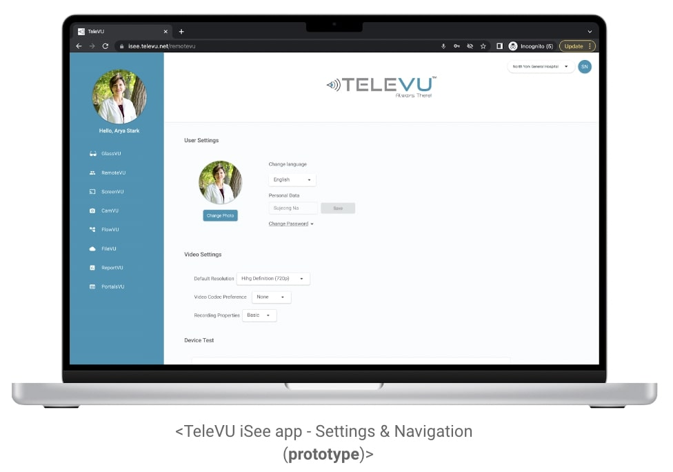
Feedback for iSee Web Application History
Feedback for iSee Web Application RemoteVU
Success Ratio: 95%
Average rating: 4.5 out of 5 stars
Note from the customers:
"the word 'add' is not straight clear."
Success Ratio: 95%
Average rating: 4.5 out of 5 stars
Note from the customers:
"everything is so intuitive."
Success Ratio: 95%
Average rating: 4.5 out of 5 stars
Note from the customers:
"everything was very straight-forward."
Reflection
Looking back on this project, I have learned an essential lesson and showed other teammates regarding the importance of the research. Most of the time, my teammates and I have been working asynchronously other than the team meetings. Therefore, it was vital to have clear records in order to keep everyone on the track. If any of the teammates did not leave any note regarding the work, we came to understand that it could become difficult to track down the work.
This project has also shown me the importance of following the process in UX design, particularly empathizing with users, as this is critical in order to avoid designing to one's taste rather than the user's needs. It also taught me the value of usability testing and iteration because we have noticed that the design did not leave the same message to every participant when we assessed how much each participant has understood what they see from the design.
Overall, what I have learned from this project is that no creation can be silly.
Everyone has different ideas and it is our job to work together to find out what idea suits the best of the customers' interests.